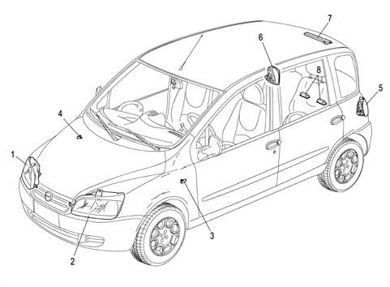
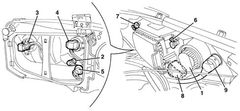
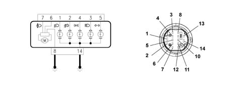

INTRODUCTION - EXTERIOR LIGHTING.
- Path
- Descriptions > 55 ELECTRICAL EQUIPMENT > 5540 EXTERIOR LIGHTING > INTRODUCTION - EXTERIOR LIGHTING.
- Kind
- system description
- Applies to
- all engines; production: da 06/04
- Interactive page
- https://sloeber94.github.io/elrnDB-fMltpl/en/#/186007326
Applies to: all engines; production: da 06/04
The vehicle exterior lighting system has been designed and produced with two objectives in mind:
- guaranteeing maximum efficiency with regard to the international regulations that define the lighting technology specifications for the various components.
- being integrated with the innovative design of the vehicle so that the various components enhance the image,
- in particular the front light cluster incorporates the separate functions of the side light, dipped headlight, main beam headlight and fog light in a single unit.
LOCATION OF COMPONENTS ON VEHICLE
The vehicle components and their location are illustrated below.

1. Right front light cluster
2. Left front light cluster
3. Left front side light
4. Right front side light
5. Left rear light cluster
6. Right rear light cluster
7. Third brake light
8. No. plate lights
FRONT LIGHT CLUSTER (HEADLIGHTS AND FOG LIGHT)
The unit consists of:

1. Main beam headlight
2. Side light
3. Dipped headlight
4. Fog light
5. Direction indicator
6. Headlight vertical axis adjustment screw
7. Headlight horizontal axis adjustment screw
8. Adjustment motor
9. Connection
The front light cluster is a lamp constructed from a fixed lens reflection technology for all the functions (dipped headlight, main beam headlight and fog light).
It contains special housings where the parabolas and the vertical and horizontal adjustment units with direct systems without idlers are secured. There is an automatic type electrical corrector (electric motor) in the unit for controlling the headlight alignment with an activation control in the instrument panel. The reflective parabolas are made from a metallic thermo-setting material and are covered in a clear paint with a protective function.
Bulbs present:
- H7 halogen bulb for dipped headlights function 12V-55W
- H1 halogen bulb for fog lights function 12V-55W
- H1 halogen bulb for main beam headlights function 12V-55W
- All glass W5W bulb for side lights function 12V-5W
- P21W bulb for direction indicators function 12V-21W
There is a dimmer in front of the dipped headlights and fog lights bulb to prevent direct rays and static.
The lens cover (glass function) is made from colourless lacquered polycarbonate that has undergone a scratch-proof treatment.
There are two openings at the rear with covers; one for access to the main beam headlight, the other for access to the other three bulbs (side light, main beam headlight, fog light).
CONNECTOR PIN OUT
The connector pin out is illustrated in the diagram.

1. Dipped headlight
2. Fog light
3. Main beam headlight
4. Side light
5. Direction indicator
6. Headlight alignment motor
7. Headlight alignment motor
8. Earth
14. Earth